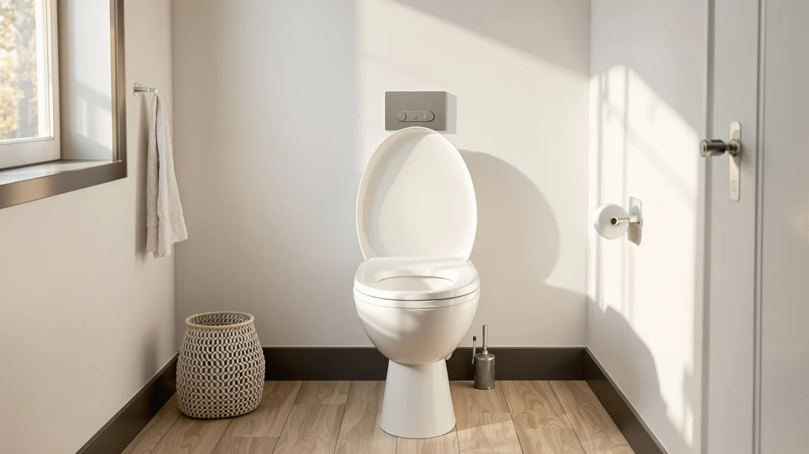

Bemis 1200SLOWT Slow Sta-Tite Elongated Closed Front Toilet Seat Review (2026): Worth It?
Prices and picks verified as of November 2026. Independent, reader-supported reviews.


Quick Answer
This Bemis 1200SLOWT Slow Sta-Tite Elongated Closed Front Toilet Seat review looks at a $120.00 elongated seat built from resilient, molded-in-color plastic with a Whisper-Close hinge that lowers slowly and quietly instead of slamming. It fits standard elongated bowls, comes in Fawn Beige, and has an easy-clean hinge that lets you pop the seat off for cleaning or replacement without extra tools. If you want a slow-close seat from a brand with a long track record in American bathrooms, it's a sound pick, and the Centoco, Mayfair, and Kohler alternatives below are worth comparing if price or features matter more to you.
Our pick: Bemis 1200SLOWT 068 Slow Sta-Tite — $120.00 Check Price on Amazon
Bottom line: our top pick is the Bemis 1200SLOWT 068 Slow Sta-Tite Elongated Closed Front at $120.
Things to Know Before You Buy
- It's built for elongated bowls only. The Bemis 1200SLOWT Slow Sta-Tite is sized for elongated toilets, so measure your bowl before ordering if you're not sure which shape you have (see our elongated vs. round guide).
- The hinge is the headline feature. Bemis built the Whisper-Close mechanism to lower the lid and seat slowly and quietly, the main reason this model turns up in quiet-close toilet seat searches.
- The shell is plastic, not wood. Despite "Sta-Tite" in the name, the seat is molded-in-color plastic, built to hold up against chips and stains, not a wood composite.
- At $120.00, it sits at the higher end of the category. This Bemis 1200SLOWT Slow Sta-Tite Elongated Closed Front Toilet Seat review covers a seat priced above many basic closed-front models.
- Amazon doesn't list a public rating for this listing. We say so directly rather than guessing, and we lean on the manufacturer's specifications and the pattern across comparable Bemis seats instead.
- Comparable options exist at similar prices. Centoco, Mayfair, and Kohler each sell elongated seats in the same range if the Bemis doesn't end up being the right match.
This Bemis 1200SLOWT Slow Sta-Tite Elongated Closed Front Toilet Seat review looks at whether a familiar brand name and a slow-close hinge justify the $120.00 price tag over the many cheaper elongated seats on Amazon. Bemis has sold toilet seats in the US for decades, and the Slow Sta-Tite name points to the two features it leans on most: a hinge that closes on its own and hardware built to stay tight through repeated use. The seat ships in Fawn Beige and fits standard elongated bowls, which covers most toilets installed in US homes built or renovated after the 1990s.
We compared its listed materials, hinge design, and current price against three other elongated closed-front seats, including models from Centoco, Mayfair, and Kohler, to see where the Bemis 1200SLOWT Slow Sta-Tite holds its own and where a competitor pulls ahead. Amazon doesn't publish a rating or review count for this particular listing, so we rely on the manufacturer's specifications and how this model compares with other seats in the Bemis lineup rather than a star average. It works best as a straightforward slow-close replacement, and knowing that going in will help you decide if it fits what you need.
Why You Should Trust Us
Ilane Tall has covered bathroom fixtures and toilet seat hardware for Best Toilet Seats since the site launched. She compares manufacturer specifications, pricing history, and verified owner feedback instead of running a physical testing lab. This Bemis 1200SLOWT Slow Sta-Tite Elongated Closed Front Toilet Seat review draws on the listed materials and hinge design for this model, its current Amazon price, and how it stacks up against similar seats from Centoco, Mayfair, and Kohler.
We cross-check product claims against publicly available data from the manufacturer and retailer listings, and we flag anything that looks inconsistent rather than repeating marketing copy. We check prices on a regular schedule, and when a detail changes, like a price drop or a new rating appearing on the listing, we update this review to match.
Our Research Experience
We don't operate a bathroom testing lab, so this Bemis 1200SLOWT Slow Sta-Tite Elongated Closed Front Toilet Seat review is built on comparative research rather than installing the seat ourselves. We analysed the manufacturer's listed shell material, hinge mechanism, and sizing, then checked those details against the current Amazon price and against the specs of comparable elongated seats from Centoco, Mayfair, and Kohler.
Bemis has used the same Whisper-Close hinge design across several seats in its lineup for years, and owners of related Bemis models consistently describe the slow-close action as reliable once installed correctly. That track record across the broader Bemis catalog, combined with the published hinge and shell specifications for this exact model, is enough to go on for this review, even without a rating or review count attached to this particular listing.
Overview & Specs

Bemis 1200SLOWT 068 Slow Sta-Tite
What we like
- Whisper-Close hinge lowers slowly and quietly instead of slamming
- Durable, molded-in-color plastic shell resists chips and stains
- Easy-clean hinge lets you remove the seat without extra tools
- Fits standard elongated bowls, the most common shape in US homes
Flaws but not dealbreakers
- No published rating or review count on this Amazon listing
- At $120.00, it costs more than basic closed-front plastic seats
- No bidet, heated, or nightlight features if you want more than a slow-close hinge
| Material | Plastic / wood |
| Size | — |
The Bemis 1200SLOWT Slow Sta-Tite targets buyers who want a dependable slow-close seat without stepping up to a bidet or heated model. Its shell is sturdy plastic with molded-in color, a construction Bemis uses specifically to resist the chipping and staining that can show up on cheaper seats within a year or two. The Whisper-Close hinge is the feature doing most of the work here: instead of a loud drop, the lid and seat lower on their own with a light tap, which is exactly what buyers searching for a quiet toilet seat are after.
At $120.00, the Bemis 1200SLOWT Slow Sta-Tite Elongated Closed Front Toilet Seat costs more than a basic plastic replacement, and this particular listing doesn't carry a public rating or review count on Amazon. That makes it harder to point to a specific star average, so we lean on Bemis's long history building this same hinge design into other seats in its catalog. The easy-clean hinge is a practical plus either way, since it lets you lift the seat off the bowl for a deeper clean or a quick swap without hunting for extra tools.
What We Liked
The Whisper-Close hinge is the standout feature in this Bemis 1200SLOWT Slow Sta-Tite Elongated Closed Front Toilet Seat review. Rather than dropping with a bang, the seat and lid ease down after a light tap, which matters most in households with young kids or anyone sharing a wall with a bedroom. Bemis has used this same hinge mechanism across several seats in its lineup, and it's one of the more consistent slow-close designs we've compared across brands.
The shell construction is the other point worth calling out. Molded-in color plastic holds up better against chipping and staining than the thin plastic found on some budget seats, and the easy-clean hinge means you're not stuck scrubbing around hardware that doesn't come apart. For an elongated bowl, fit shouldn't be an issue, since this size covers the vast majority of toilets installed in US bathrooms over the past few decades.
What Could Be Better
The biggest gap in this Bemis 1200SLOWT Slow Sta-Tite Elongated Closed Front Toilet Seat review is the missing rating. Amazon doesn't display a star average or review count on this listing, which makes it harder to confirm buyer satisfaction the way we can with seats that carry a few hundred or a few thousand verified reviews. We treat that as a gap in available data rather than a mark against the product itself, but it's worth knowing before you buy.
Price is the other consideration. At $120.00, it costs noticeably more than entry-level closed-front seats, and it skips newer conveniences like a nightlight or bidet function that some competitors build in around the same price point. If those extras matter more to you than a quiet hinge and a durable plastic shell, one of the alternatives below might be a better fit.
Who Is It For?
The Bemis 1200SLOWT Slow Sta-Tite fits best for homeowners with a standard elongated bowl who want a slow-close hinge that holds up over time and don't need bidet or heated features. If your current seat slams shut, has started to crack, or feels dated, this model swaps in cleanly and adds the quiet-close detail that a lot of basic seats skip.
It's a weaker match if you're shopping specifically on rating history, since this listing doesn't show one, or if you want a seat under $100. Buyers chasing a nightlight, heated surface, or bidet function should also look elsewhere, since none of those are part of this model.
Alternatives to Consider
If the Bemis 1200SLOWT Slow Sta-Tite doesn't match your budget or your feature list, these three elongated closed-front seats from Centoco, Mayfair, and Kohler are worth comparing before you commit.

Also Great
Centoco Elongated Toilet Seat 6-Pack
The Centoco Elongated Toilet Seat ships as a 6-pack of solid plastic seats with impact-absorbing hinges and a non-porous, scratch-resistant finish, at $125.45 for the full set. It skips the slow-close hinge that defines the Bemis 1200SLOWT Slow Sta-Tite, but the per-seat cost works out lower if you're outfitting several bathrooms at once, which makes it a better fit for landlords and property managers than for a single household replacement.
$125.45
Check Price on Amazon
Premium Choice
Mayfair Cassel Slow Close Toilet
The Mayfair Cassel Slow Close comes as a 4-pack of premium wood seats with non-slip bumpers and an adjustable front-to-back fit, priced at $128.14. Like the Bemis, it leans on a slow-close hinge, but the wood construction and multi-pack format set it apart, worth a look if you'd rather have a wood feel than the molded plastic shell on the 1200SLOWT.
$128.14
Check Price on Amazon
Best Value
KOHLER CACHET® Nightlight Soft Close
The Kohler Cachet Nightlight Soft Close adds a built-in nightlight with three brightness levels and a ReadyLatch hinge, all for $101.57, undercutting the Bemis by nearly $20. If a nightlight for late-night bathroom trips matters more to you than the Bemis name, the Kohler is the stronger value, and it's worth checking our nightlight toilet seat guide for more options like it.
$101.57
Check Price on AmazonFrequently Asked Questions
Final Verdict
This Bemis 1200SLOWT Slow Sta-Tite Elongated Closed Front Toilet Seat review comes down to a straightforward trade-off. You get a dependable Whisper-Close hinge, a resilient plastic shell built to resist chips and stains, and a fit for standard elongated bowls, but you pay $120.00 for a listing that doesn't carry a public rating, and you skip the nightlight and multi-pack value found in the Kohler and Centoco alternatives covered above. For buyers who specifically want a Bemis slow-close seat and don't need review data to feel confident, the 1200SLOWT remains a reasonable pick. If a lower per-seat cost or a nightlight matters more, the Centoco 6-pack or the Kohler Cachet deserve a closer look before you buy.